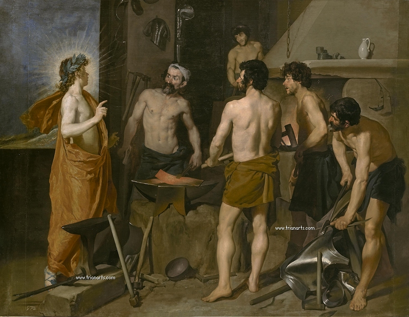
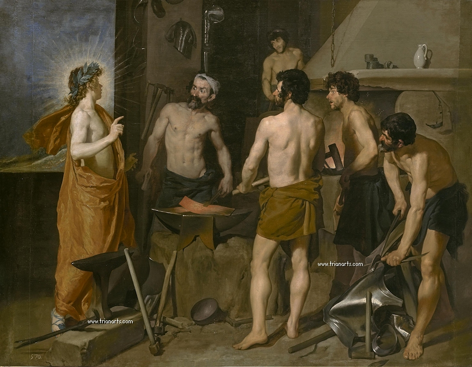

DIEGO VELÁZQUEZ
BIOGRAFÍA

(Diego Rodríguez de Silva y Velázquez; Sevilla, 1599 - Madrid, 1660) Pintor español. Además de ser la personalidad artística más destacada de su tiempo, Diego Velázquez es también la figura culminante del arte español, sin rival hasta los tiempos de Goya.
Diego Velázquez realizó su aprendizaje en Sevilla, en el taller de Francisco Pacheco, con cuya hija se casó en 1617. Cuando todavía era un adolescente, pintó algunas obras religiosas (La Inmaculada Concepción, La Adoración de los Reyes Magos) con un realismo inusual y pronunciados efectos de claroscuro. A la misma época pertenece una serie de obras de género con figuras de prodigiosa intensidad y una veracidad intensísima en la reproducción tanto de los tipos humanos como de los objetos inanimados; entre otros ejemplos se pueden citar Vieja friendo huevos y El aguador de Sevilla.
OBRA PICTÓRICA
 
